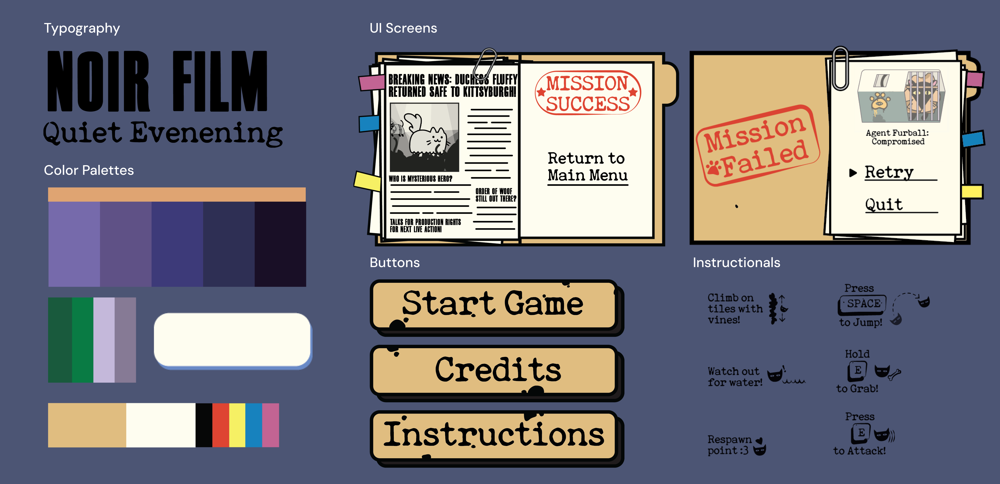

Infiltrate the Order of the W.O.O.F to save Kittysburgh.
A stealth based platformer where players must crawl, climb, and claw their way throughout the game.
Role:
Lead Artist, UI Designer
Duration:
4 weeks
Tools:
Game Design, Concept Art, Procreate, Adobe Illustrator, Unity
Collaborators:
Allison Wivagg, Angela Xu, Wenjia Han, Jonathan Choi
Creating a Narrative: Superspy Cats vs. Cyborg Dogs.
When world leaders’ cats vanish, Agent Furball must infiltrate the cyborg dogs'
secret lair to rescue Duchess Fluffy and stop The Order of the W.O.O.F.
before they replace all felines.
Setting the stage: the Secret Lair.
The 2D noir-style sewer lair of a cyborg dog society was brought to life through modular platformer units, and small easter eggs to emphasizing environmental storytelling.
Integrating the UI into the story.
The UI blends a spy-inspired aesthetic with accessibility, using redacted case file motifs for menus and type-stamp tutorials, and a distinct palette for legibility while immersing players in the game’s narrative.

Curating the best onboarding.
These iterations, guided by playtesting and developer feedback, refined the art and UI to enhance legibility and address key concerns.